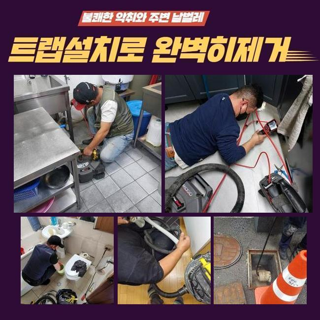
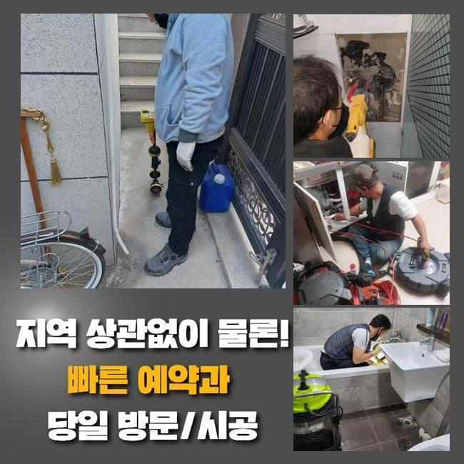
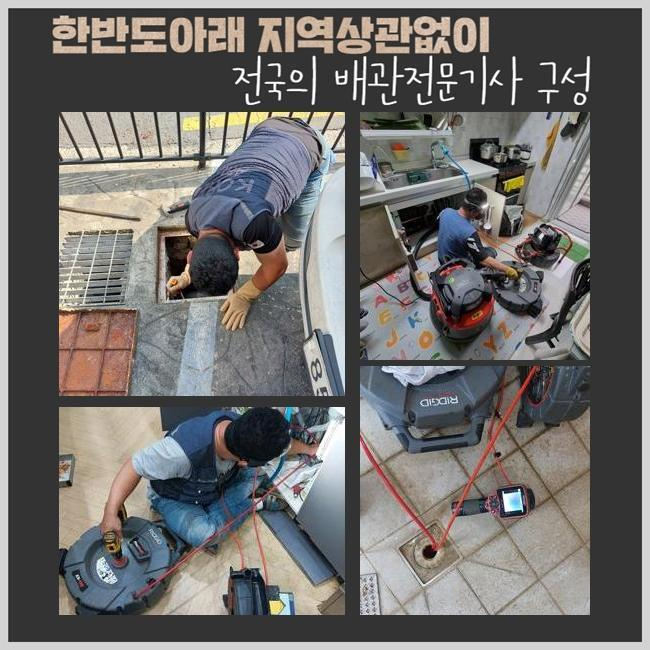
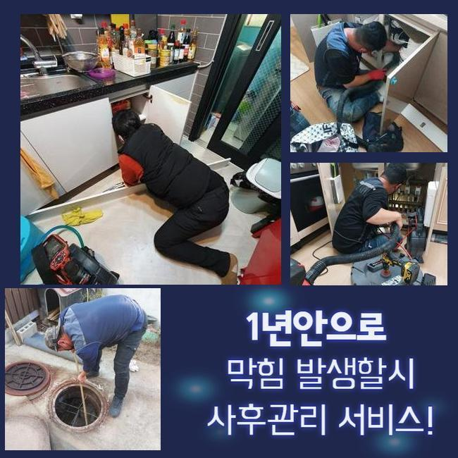
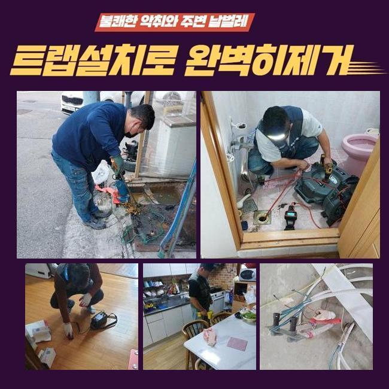
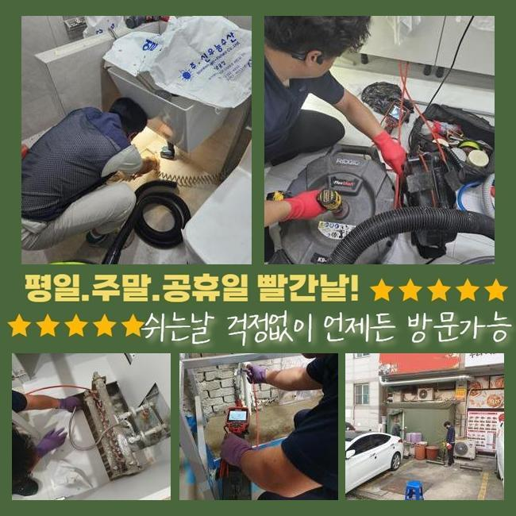
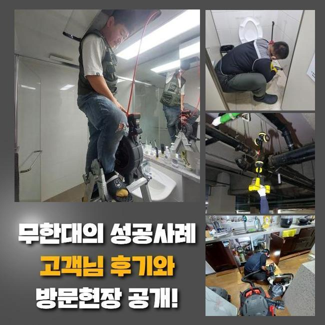

🏠 대야동하수구뚫음 무지내동 하수구뚫는비용 배관설비공사
용인 하수구막힘 전문 시공 후기

📋 작업 개요
- 위치: 용인
- 서비스 유형: 하수구막힘, 배관막힘, 맨홀막힘, 역류해결, 뚫는업체, 배관청소, 고압세척, 설비공사
- 작업 일시: 2025. 1. 8. 20:40
- 업체명: 하수구수사대 (010-5615-2118)
🔍 문제 상황
대야동하수구뚫음 무지내동 하수구뚫는비용 배관설비공사
저희업체는 며칠전 상가건물의 배수정체를 시정하기위하여 내방했는데요
전화를 주셨던 고객분의 안내를 그렇기에 저희의경우 상가내의 화장실부분에서 계속적인 이물질 역류 통수장애를 시정해내고자 도착했죠
의뢰인은 이것으로 인하여 이런저런 민원까지 수용해야했던 상황이였어요
현재의 사태들을 조속히 조치할 생각에 저희들은 서둘러 도착해 배수관을 살폈습니다
지금까지 야기되는 잔해가 배수구를 좁혀버린걸 목격하고 조속하게 해결했어요
그간의 사례로 판단해보니 이 같은 이물질들은 상당수 메인관에서 관찰되기에 이같은 증세가 생겨난 걸로 생각했죠
이를 확인하고 신속하게 외부라인으로 자리를 옮겨 이상이 있는 관로들의 부위를 파악하기위하여 진단과정을 이어갔어요
탐지기기를 이용하여 배관의 스팟을 찾았고 개폐구를 여니 이물의 고착률이 심각수준이였어요
내부로부터 축적된 부유물들의 잔여물질과 바깥에서 흘러들어간 폐기물들까지 마구잡이로 혼합되었죠

🔎 원인 분석
💡 전문가 진단: 정밀 진단 장비를 사용하여 슬러지의 고착 여부를 판명하고 타격/세척 작업을 실시했습니다.
이러한 배수정체를 시정하기위하여 빠르게 적합한 대응을 하게 되었고 상가건축물의 시설을 장기간 사용하게 했죠
어느 한 구간에 잔해가 누적되면 많은 배수정체를 일으키므로 해결들을 지체시키지않는것이 중요하겠습니다
진단을 실시하니 잔해물이 넓은 범위에 분포해있는것을 확인했는데요
오염물들은 지속적으로 쌓인다면서 돌과 같이 크기를 키워가고있었습니다
고착화가 진행되면서부터 배수에 치명상이 나타났다고 생각했어요
그러므로, 장비들을 통해 하수관을 청소해주었어요
여러기기들로 하수관을 시공한다면 고수압의 세척들이 중요하겠습니다
만일 맨홀쪽에 잔해들이 자리하고 있으면 자주 쓰이는 방법으론 개선을 꿈꾸기엔 힘든데요
그렇기에, 고수압의 방식으로 효율적으로 내부오염원들을 제거시키는게 중요한데요
컨디션을 회복시키면 관로를 깔끔하게 사용할 수 있고 오류가 축적되는 것을 앞서서 피할 수 있게됩니다
그러므로, 배수관을 시공한다면 고압수청소를 염두에 두시는 것도 좋겠습니다

🔧 작업 과정
더 나아가 흡착물들이 축적되지 못하게 때에 맞춰 진단해보는게 대두되고 적절히 조치한다면 수월하게 통수장애를 해결할 수 있습니다
그리하여 트러블들이 발생했을 때는 명확한 시공이 중요하고 전문진의 도움들로 속 시원한 환경구축을 유지시키는게 이행되어야해요
기술적인 측면이 중요하겠으나 전문인과 함께하여 배관을 깨끗히 유지시키는게 실용적인 방식으로 작용할 수 있어요
일련의 과정들을 제대로 진행시키기 위해선 구조적인 부분과 특성들을 알고 있어야 하죠
하수관은 이런저런 소재들로 구성되어있고 기간이 지나면서 튼튼함이 떨어지므로 쎈 압력들을 쏴주는것은 위험이 따릅니다
소재별 특성과 해당 장소의 데이터를 바탕으로 알맞은 방식을 통해야하겠습니다
이같은 조건들을 잘 지키면 고압세척들로 최적의 배관컨디션을 꾀할 수 있습니다
해당 시점에 이용한 석션도구는 압력의 차이를 통해 배수관의 부유물들을 안전하게 없애주었습니다
석션통에 배출된 오염원의 잔해를 목격했고 내시경도구를 이용해 깊은 지점을 살펴보니 잔해들이 대다수라 배수상황에 애를 먹고 있었어요
해당 문제들을 파악하고 타 방법을 실시해 저희업체는 관로에서 발생한 통수장애를 신속하며 실용적으로 해결함과 동시에 구조상태와 고착정도를 파악해보고 시공을 해주어 수월한 배수상황을 확보했습니다
이런 현상은 보통 잔해가 내측에 누적되어있어 누적되는 증상들로 내측으로부터 좁혀지게되어 통수들이 멈추는 현상들이 야기되게됩니다
심각한 경우면 전문가들의 도움들로 내시경장치를 운용해 깊은 지점을 점검해주고 근간이 되는 기조요소를 없애주는것이 중요하겠습니다
고압수청소를 이어가며 저희전문진은 타겟위치로 세척라인을 삽입해주었고 입구쪽 라인에선 기름들이 쏟아지며 배출되는 현상을 관찰했죠
이와 달리 기름슬러지가 자리한 3미터 위치에서는 슬러지들의 상황을 체크하고 물줄기들의 강도들을 주시하며 세척들을 이행해주었어요
이물들의 흡착정도가 심했기에 온수 고압수청소를 진행시켰는데 안전관련 조건들을 지켜내며 기름때들을 수습했습니다
막히는 사례는 불현듯 등장해 이런저런 불편들을 야기시키죠
배수관의 결함들은 대다수 고착물이 점차 쌓여 발생되기에 골든타임 내에 막힘들을 시정해야해요


✅ 작업 완료
고객의 불편해소를 위하여 신속하게 해결하겠습니다
통수장애를 조사하고 알맞는 방식을 선별해서 이물제거에 집중합니다
신속한 해결책이 중요하므로 문제상태를 지체시켜선 안되죠
솔루션이 필요하다라면 편히 연락주세요!
결함이 발생하면 신속하게 대응하여 안정적이고 청결한 배수환경들을 지키겠습니다




⚠️ 하수구 배관 막힘 예방 및 관리 가이드
- ✅ 머리카락, 비닐, 물티슈 등 물에 분해되지 않는 이물질은 하수구 유입을 절대 금지해 주세요.
- ✅ 하수구 거름망을 씌우고 모여진 이물질은 주기적으로 쓰레기통에 바로 비워주셔야 합니다.
- ✅ 배관 노후가 심할 경우 이물질이 더 쉽게 걸리므로 주기적인 배관 세척(고압세척 등)을 권장합니다.
- ✅ 작업 후 1년 이내 재발 시 하수구수사대에서 무상 A/S 보증 서비스를 제공합니다.
💡 핵심 정리
- 확실한 장비 작업(내시경 점검 및 샤프트 스케일링)으로 원인을 뿌리 뽑습니다.
- 작업 후 1년 이내에 동일한 부위 재발 시 100% 무상 A/S 서비스를 보장합니다.
- 서울 · 경기 · 인천 전 지역에 24시간 언제든 긴급 출동할 수 있도록 항시 대기 중입니다.
❓ 자주 묻는 질문 (FAQ)
🚨 용인 하수구막힘 문제로 고민이신가요?
정확한 원인 진단과 확실한 시공으로 재발 없는 해결을 약속드립니다.
24시간 긴급 출동 | 서울 · 경기 · 인천 전지역 | 1년 내 재발 시 무상 A/S